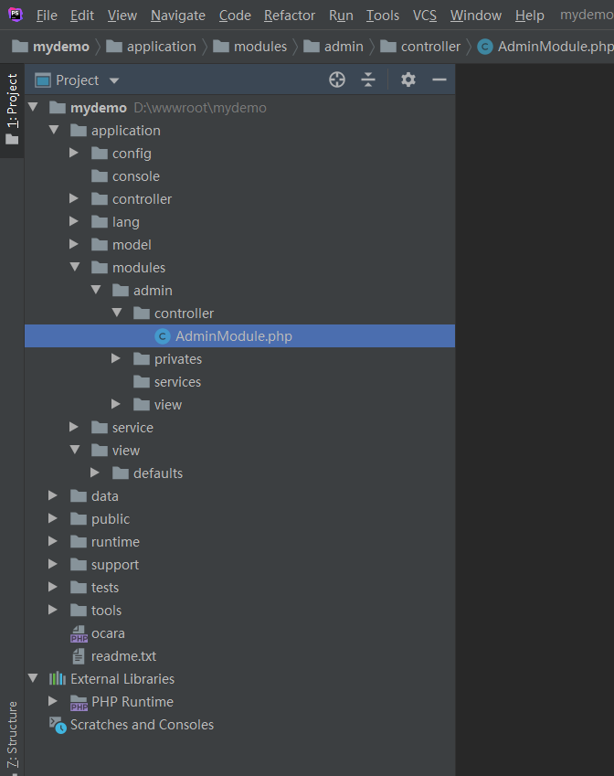
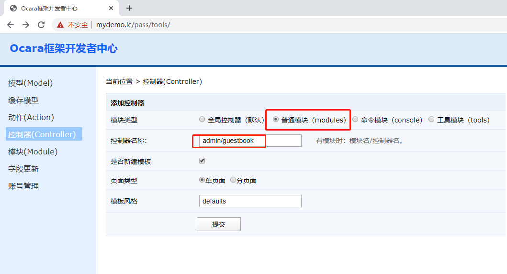
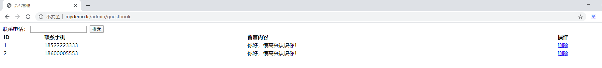

8.2.3 后台管理留言
1、新建后台模块 进入开发者中心，选择“普通模块（modules）”，“普通控制器”，添加名称为admin的模块，请参考2.2_添加模块。  2、添加控制器 进入开发者中心，选择“普通模块（modules）”，添加名称为admin/guestbook的控制器。会在application/modules/admin/controller新建guestbook控制器目录。  3、新建布局 添加留言是在前台，使用的是layout.php作为布局文件。 后台管理这里，要在模块目录的view下面手动新建一个布局文件，我们定名为admin.php。 只要在application/view/layout手动添加admin.php文件。<!DOCTYPE html PUBLIC "-//W3C//DTD XHTML 1.0 Transitional//EN" "http://www.w3.org/TR/xhtml1/DTD/xhtml1-transitional.dtd"> <html xmlns="http://www.w3.org/1999/xhtml"> <head> <meta http-equiv="Content-Type" content="text/html; charset=utf-8" /> <title>后台管理</title> <?php $this->load(array('jquery-1.8.3.min.js', 'base.js')); ?> </head> <body> <div class="header"></div> <div class="main"> <?php $this->showTpl(); ?> </div> <div class="footer"></div> </body> </html>然后在admin模块文件中的__module()初始化函数中添加如下代码，修改layout为admin。namespace app\modules\admin\controller; use Base\Controller\CommonController; class AdminModule extends CommonController { /** * 初始化模块 */ public function __module() { $this->setLayout('admin'); } }4、查询并处理数据 （1）在模块目录的service目录手动添加BaseService和GuestbookService BaseService代码：namespace app\modules\admin\service; use Base\Service\CommonService; class BaseService extends CommonService {}GuestbookService代码：namespace app\modules\admin\service; use app\model\database\GuestbookModel; class GuestbookService extends BaseService { /** * 搜索 * @param array $search * @return mixed */ public function getList($search = array()) { $condition = array(); $model = GuestbookModel::build(); //手机号搜索 if (!empty($search['telephone'])) { $condition['telephone'] = $search['telephone']; } //分页设置 $pageInfo = $this->pager->getInfo(); //查询数据 $result = $model ->where($condition) ->page($pageInfo) ->getAll(); return $result; } }（2）添加搜索动作类 新建一个form_search的搜索表单，因为该表单可以多次刷新使用不需要验表单，所以要加上checkForm(false)禁掉验证表单令牌。namespace app\modules\admin\controller\guestbook; use app\modules\admin\service\GuestbookService; class IndexAction extends Controller { /** * 初始化 */ protected function __action() { //搜索列表不需要验证表单 $this->isCheckForm(false); } /** * 表单注册 */ public function registerForms() { $this->form('form_search') ->init(ocUrl('/admin/guestbook/index')); } /** * GET输出 */ public function display() { $result = GuestbookService::build()->getList(); $data = $result['data']; $total = $result['total']; $curRoute = $this->getRoute(); $curGet = $this->request->getGet(); //生成分页HTML $this->pager->setHtml($total, array($curRoute, $curGet)); //设置模板变量 $pager = $this->pager; $this->assign(compact('pager', 'data')); } /** * Ajax处理 */ public function api() { $result = $this->getList(); $data = $result['data']; $total = $result['total']; return $data; }5、模板内容 在application/modules/admin/defaults/template/guestbook下面会自动新建index.php模板文件。<?php $this->load(array('admin/guestbook/index.js')); ?> <div class="search"> <?php echo $form_search->begin();?>联系电话： <input type="text" name="telphone" /> <input type="submit" name="Submit" value="搜索" /> <?php echo $form_search->end();?> </div> <table width="100%" border="0"> <tr> <td><strong>ID</strong></td> <td><strong>联系手机</strong></td> <td><strong>留言内容</strong></td> <td><strong>操作</strong></td> </tr> <?php foreach ($data as $row) {?> <tr> <td><?=$row['id']?></td> <td><?=$row['telephone']?></td> <td><?=$row['content']?></td> <td><a href="javascript:;" onclick="deleteRecord(<?=$row['id']?>)">删除</a></td> </tr> <?php } ?> <tr> <td colspan="4" align="right"><?php echo $pager->html;?></td> </tr> </table>在浏览器访问： 